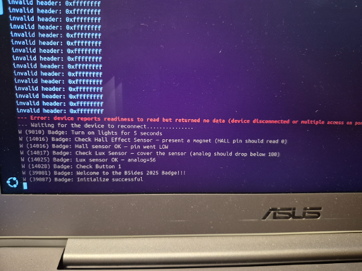
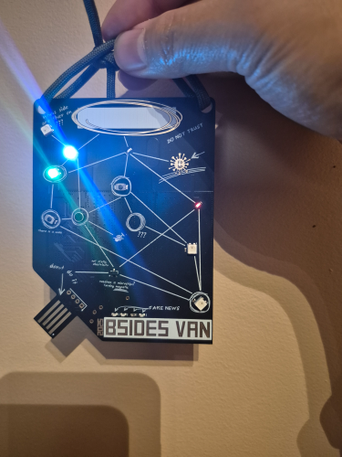
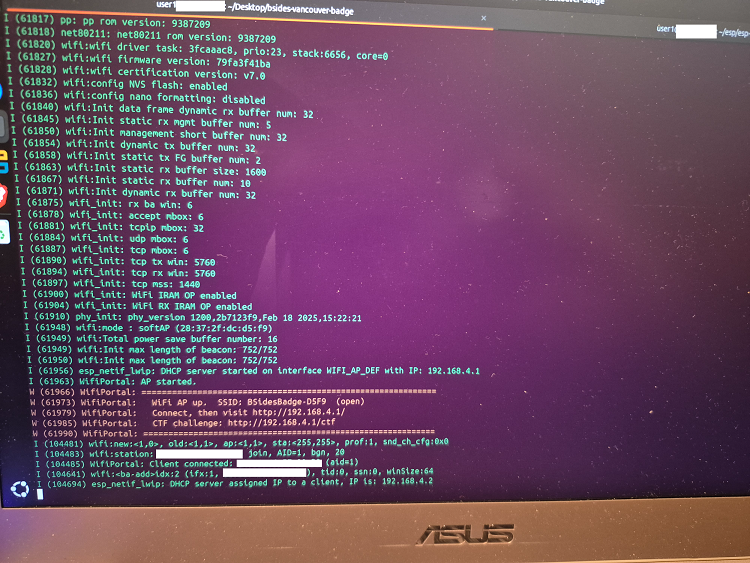
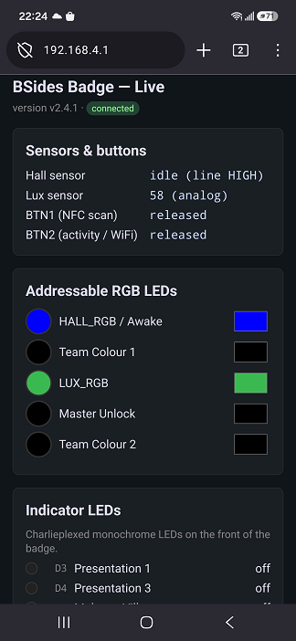
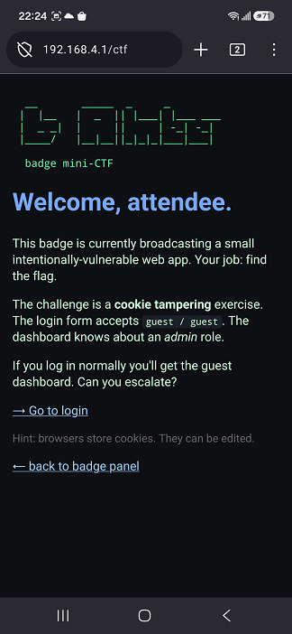

I was able to get a spare Bside Vancouver 2025 electronic badge which is a circuit board. You had to flash the electronic badge. Reading the Github repo, Bsides Vancouver 2025 badge, and since I am not a developer/coder, it is still self explanatory.
I was following the Github repo but I was running into issues. My local host is Linux. With a lot of Google-Fu and using AI, I was able to pin point the issues. The two issues was a folder permission issue and a user permission issue to the Serial Hardware Group. After addressing these two issues I was able to successfully flash the badge.





A private client sent a laptop to me to have a look, because the laptop wasn’t booting into the Operating System. The Operating System is Windows.
I attempted to boot into the BIOS mode, boot into Safe Mode, boot into Recovery mode, and boot into Advance Setting. None of these worked. The next step was opening the laptop and checking it physically. I confirmed the SSD is correctly seated, checked and verified the other computer components are connected properly, and checked other areas. Everything is seated and connected properly and stable.
I grabbed one of my USB thumb drives that has Linux. I was able to boot successfully from my USB thumb drive. Once I was in, I checked the root of the drive (C:\) to see what’s up. There wasn’t anything inside. There was only two folders. I told the private client of my findings. They were disappointed but they told me that the laptop was being used as a homelab, per say. They said that any flavour of Linux can be installed.
I proceeded with installing Ubuntu as the Operating System. I didn’t run into any issues. Once Ubuntu was installed, I applied all the necessary updates and I checked the security related settings to make sure it isn’t overly permissive, and making the Operating System secure as possible. I let the private client test drive the laptop. They are satisfied with the new Operating System.
I setup a new tablet for a private client. Their tablet is old and still usable, but it was showing signs of deterioration.
Before proceeding with setting up the new tablet, I confirm with them if there any data or accounts that need to be migrated over. They said there aren't any important data or accounts that need to be migrated. I proceeded with the setup of the new tablet such applying updates, reviewing and configuring settings, installing requested applications, and setting up the client’s Cloud accounts.
The private client took the new tablet for a “test drive”. They confirmed everything is there and it is functioning accordingly.
There were two projects I did with my significant other. The first was re-establishing the digital TV box and re-establishing the NAS.
First was re-establishing the digital TV box. This digital TV box hasn’t been active for 5+ years. Powered up the digital TV box to see if it still boots up. The digital TV box booted up fine but it was claiming there is no network connection.
I logged into the ISP’s wifi modem to see if the digital TV box is seen. The digital TV box is seen in the ISP's wifi modem. After doing a few power cycle of the digital TV box, decided to factory reset it. Did the factory reset and went through the process. During the process it said that no backup file was found. My significant other phoned Support and work with them. Support did something on their side, because after the digital TV box was rebooted it was going through the “first time setup” prompts. After an hour or so, the digital TV box seems to be operational but it is restarting and freezing often. Support said the digital TV box is quite old and most likely need to be replaced. A new digital TV box has been ordered and will replace the old one.
The second one is re-establishing the NAS. The NAS hasn't been powered on for quite some time too. But before powering the NAS, it needed to be dust free because dust has accumulated in it since it was last active. The NAS was taken apart and was vacuumed. Once most of the dust were vacuumed the NAS was reassembled. My significant other reassembled the NAS and powered back up. Confirmed the NAS is working. It needed to go through maintenance which my significant other took over. Other than that, the NAS is still operational and working like brand new.
This was a fun project that I tagged along. My significant other is such a nerd with technologies. It is always nice to have something in common.
Installed three Sony Bravia 65" Smart TV for a private client. The process wasn't difficult but the private client wasn't too comfortable of setting up the technical portion. Which was setting up the network, in this case it was WiFi, applying updates, linking up required Cloud accounts, install other streaming applications, reviewing additional configurations, and doing a final confirmation. Fortunately, I didn't have to do mount any brackets.
Even though this wasn't necessary cybersecurity related there was an element of IT, which was setting up the network. Plus, I get to get my hands dirty and do physical work.
This event was in two folds. It was a fire recovery project and a service project. I was part of the service project group.
The main task was building a fence. It was a great experience because I never built a fence and I got a lot of hands-on time with tools that I normally don't get to have. The tools I used was jigsaw, circular saw, reciprocating saw, hammer, impact wrench.
This event took me out of my comfort zone and learn a new life skill.
I built a virtualized environment that comprise of a virtual Ubuntu machine and a virtual Windows to practice various Blue Teaming TTP(tactics, techniques, procedures) such as network traffic analysis, log analysis, phishing analysis, and other methodologies.
Below are the following tools that were used.Since this lab is part of the course, it is intellectual property of TCM Security Academy. I truly respect of what TCM Security does and their contribution to the cybersecurity community. I will not post the setup guide. If you want to see the lab and set it up yourself, go sign up for the course. You will not be disappointed.This is the link to TCM Security's Academy, TCM Security Academy. Also, here is their website TCM Security main website
This was a training event and a service project. This is the first event I attended and get to meet the team.
I didn’t participate in the main training event, but I was heavily involved in the service project. The service project involved fire mitigation and vegetative debris removal. I used various tools in the service project tasking but the most interesting tool I used was the log splitter.
I built a virtualized environment that comprise of a virtual Windows Active Directory, two virtual Windows machines, and one attacker machine that is Kali Linux to practice various Penetration Testing TTP(tactics, techniques, procedures) such as LLMNR poisoning, Pass the hash/Pass the Password, token impersonation, kerberoasting, golden ticket attack, SMB relay attack, and IPv6 DNS attack.
Below are the following tools that were used on specific attacks.
Since this lab is part of the course, it is intellectual property of TCM Security Academy. I truly respect of what TCM Security does and their contribution to the cybersecurity community. I will not post the setup guide. If you want to see the lab and set it up yourself, go sign up for the course. You will not be disappointed.This is the link to TCM Security's Academy, TCM Security Academy. Also, here is their website TCM Security main website
Configured a Raspberry Pi to a wireless Penetration Test box to learn wifi attack against WPA2-PSK. I installed Kali Linux onto the Raspberry Pi. The built-in wifi adapter is compatible, so I was able to conduct a wireless Penetration Test. I used Aircrack-ng for the wifi attack.
This is one of the setup guide I used for this project, Setup Raspberry Pi as wifi Pentest boxConfigured a ESP32-CAM to be a camera. I used two resources to complete the project; Getting started with a esp32-cam and Create a Wi-Fi Spy Camera with an ESP32-CAM. The second link which is a youtube video was for me check it out from a different perspective.